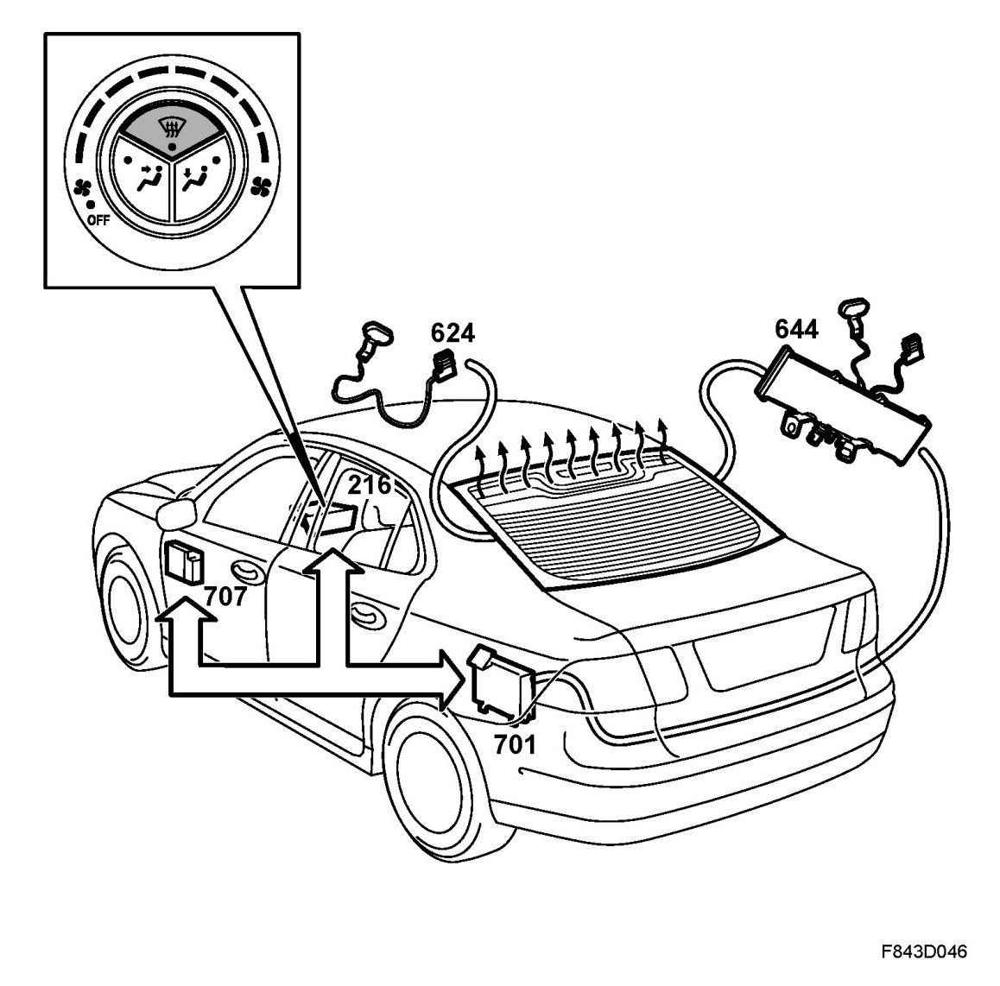
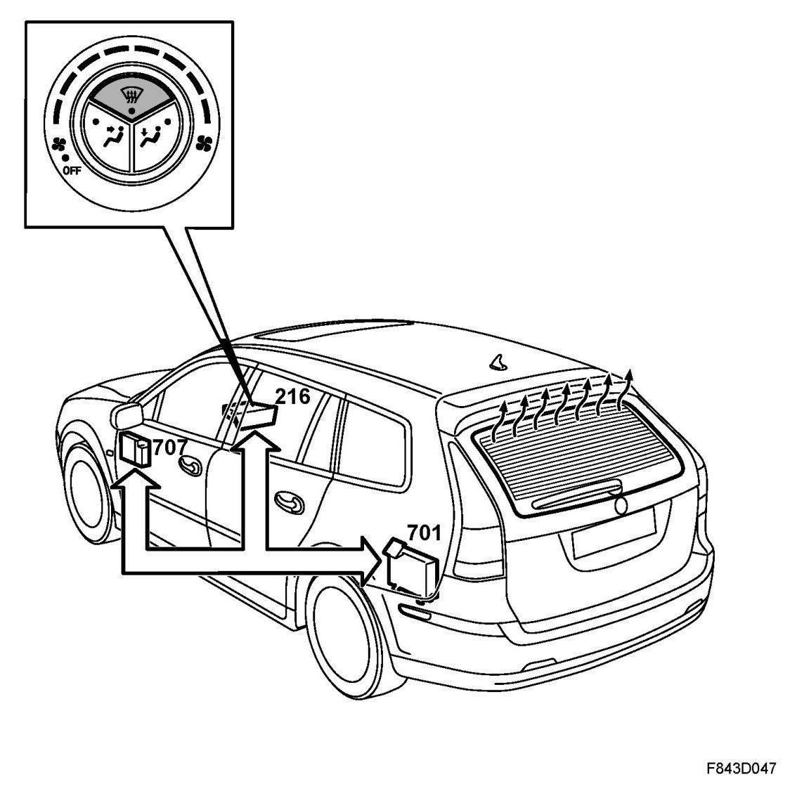
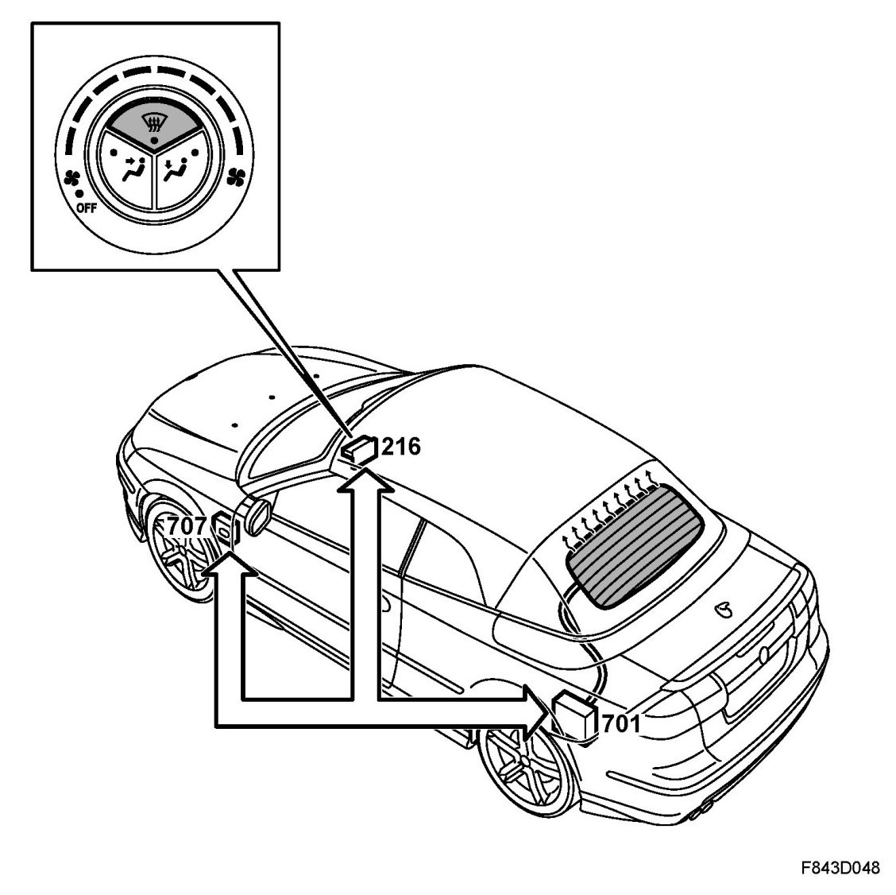
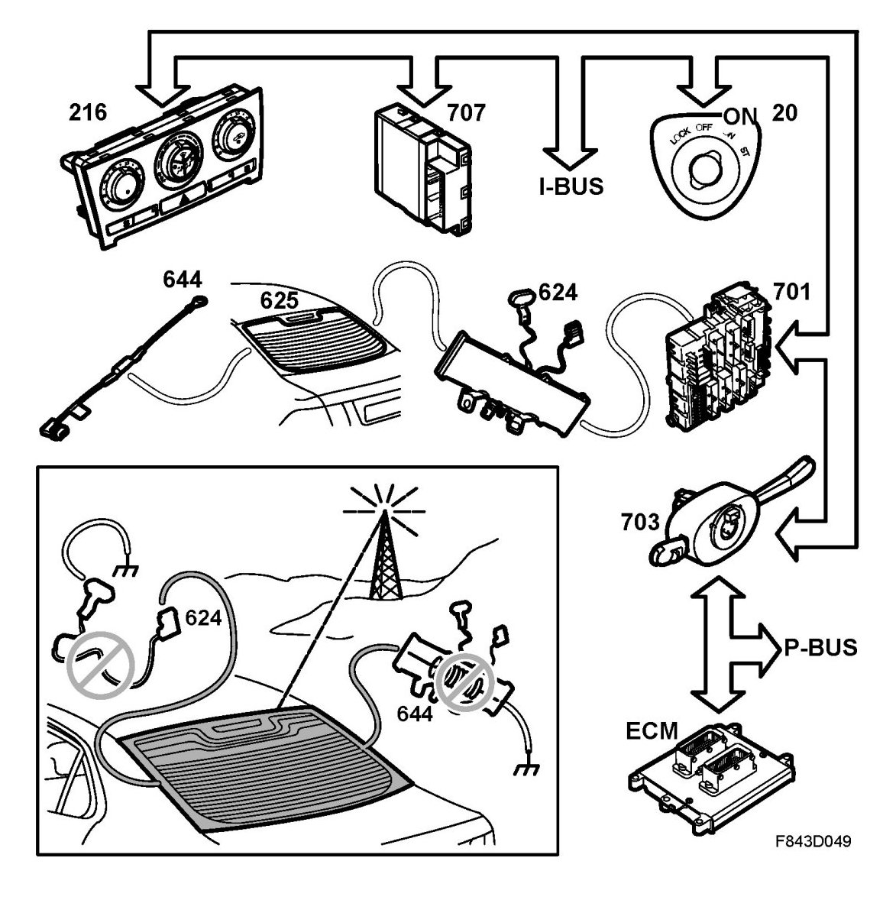
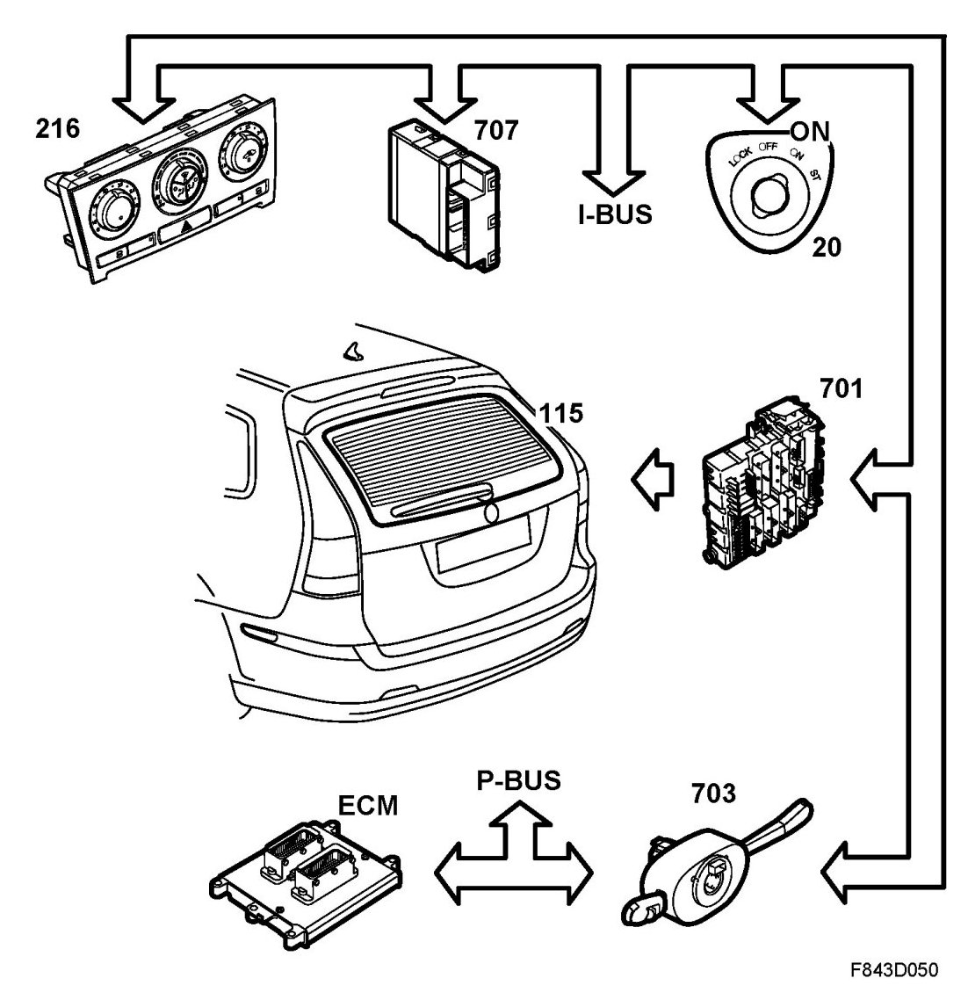
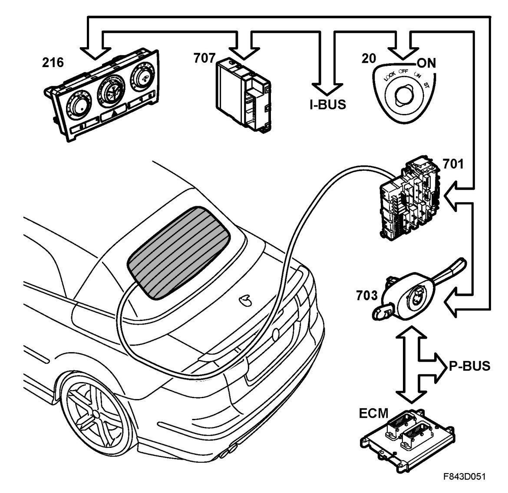

Electrically Heated Rear Window, Detailed Description
Electrically Heated Rear Window, Detailed Description
4D

5D

CV

The electrically heated rear window is activated manually by pushing a button on the ACC panel or automatically by the ACC. In order to enable automatic activation the ACC must be configured for this using the diagnostic tool.
CV: The heated rear window can only be activated when the soft top is raised. The STC control module transmits the bus message "Demist rear window, inhibit request", which is used by BCM to prevent the rear window demisting being activated when the soft top is lowered.
When the heated rear window switch is depressed, the ACC control module sends out the bus message "Rear demist request from ACC", which is used by BCM. If the ignition key is in the ON position and the car engine is running, BCM will transmit the bus message "Rear demist request" after a 5-second delay. BCM will transmit this message as long as the above conditions are met or until 12 minutes have elapsed.
4D

5D

CV

4D The bus message "Demist, request from ACC" is used by REC, which activates rear window relay 113. B+ is then fed from REC pin 2, which in turn is connected to the antenna amplifier. In the antenna amplifier current passes through a coil with low resistance and then on to the rear window heating element before being grounded via an antenna filter (coil). The coils on both sides are intended to prevent high-frequency signals (88-108 MHz) from being grounded and then directed out through the combined rear window/antenna.
The bus message "Rear demist request from ACC" is used by REC, which activates rear window relay 113. B+ is then fed from REC pin 2. At the same time as REC (701) activates demisting of the rear window. It also transmits the bus messages: "Rear demist", which is used by ACC to light the LED in the button, and "Rear electrical centre, change in current consumption", which is used by the engine management system to compensate for the increased alternator load.
5D: The bus message "Demist, request from ACC" is used by REC, which activates rear window relay 113. B+ is then fed from REC pin 2, which in turn is connected to the rear window heating elements and is grounded through grounding point G29.
The bus message "Rear demist request from ACC" is used by REC, which activates rear window relay 113. B+ is then fed from REC pin 2. At the same time as REC (701) activates demisting of the rear window. It also transmits the bus messages: "Rear demist", which is used by ACC to light the LED in the button, and "Rear electrical centre, change in current consumption", which is used by the engine management system to compensate for the increased alternator load.